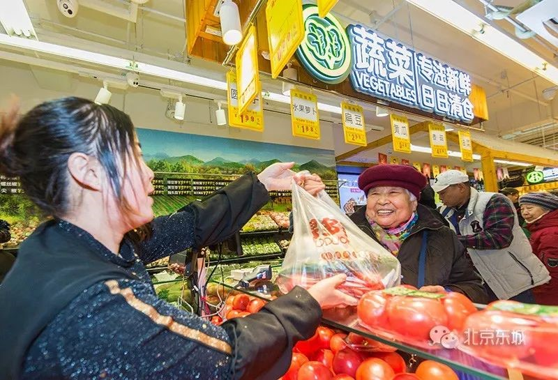
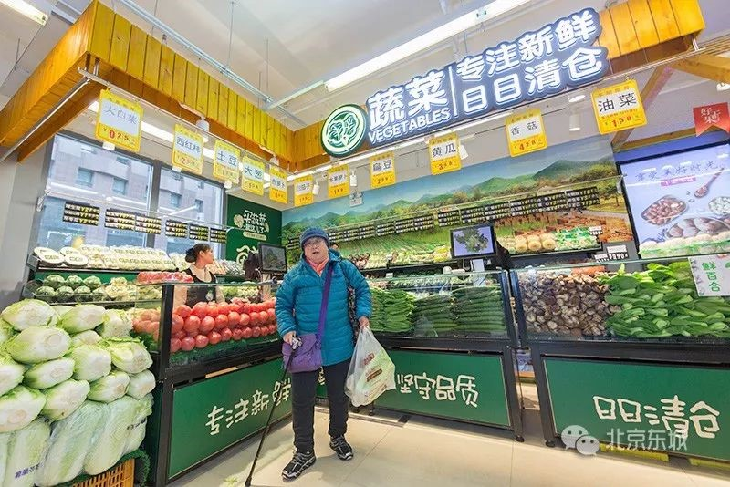
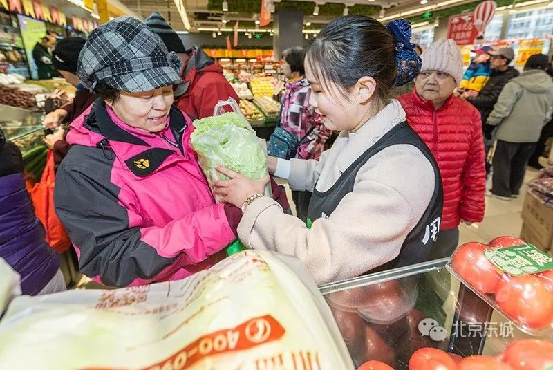
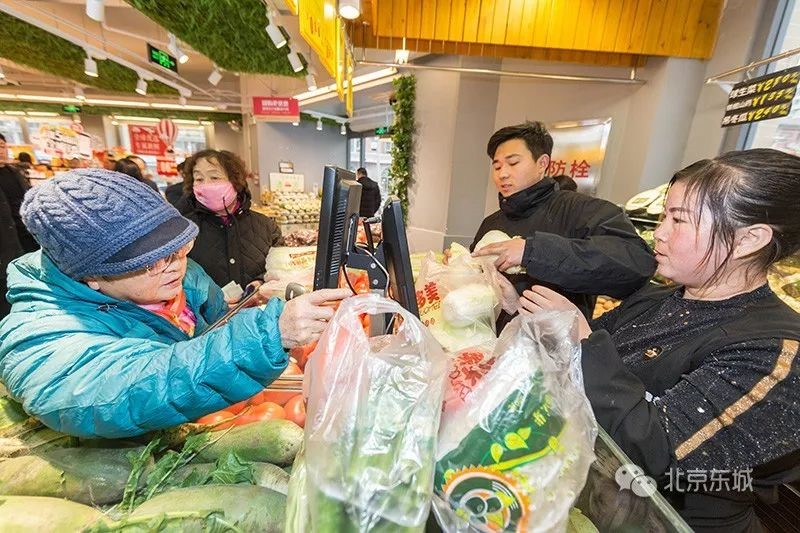
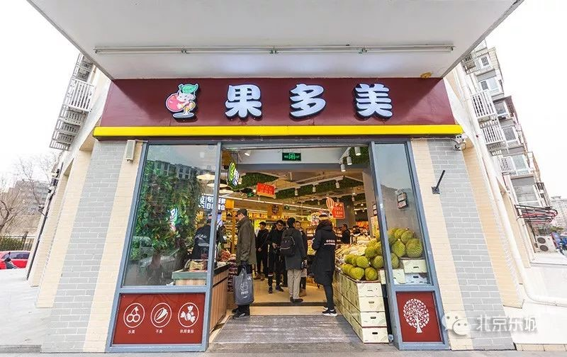
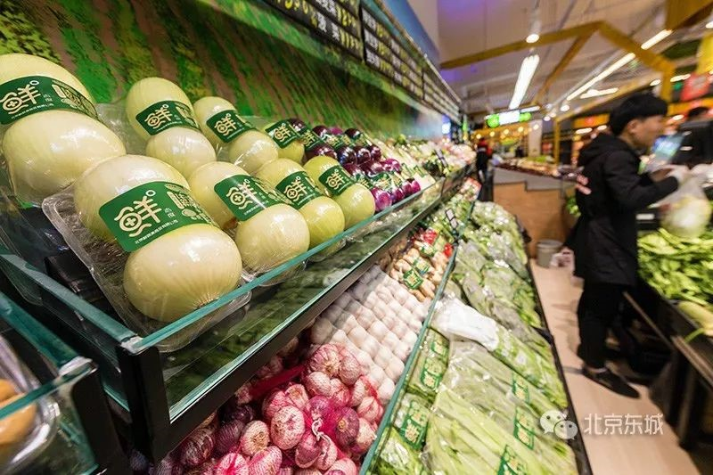
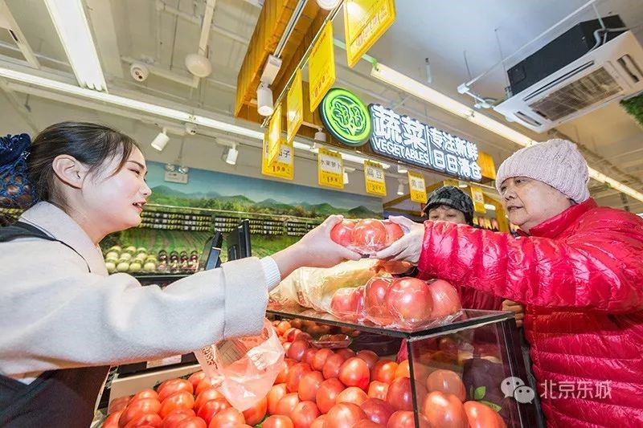
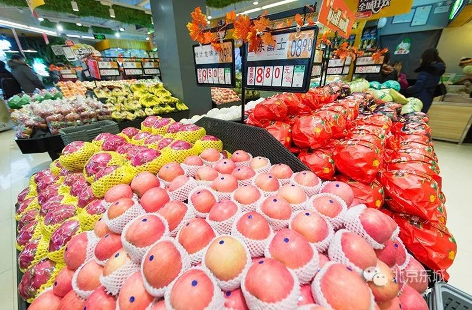
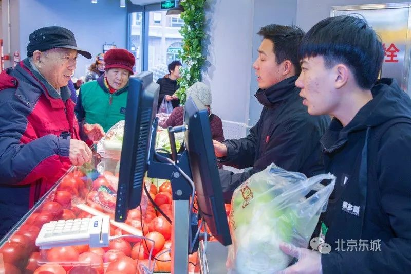
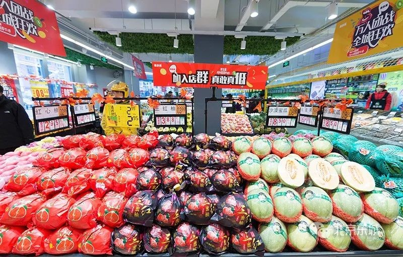

越来越便利！水果超市也卖菜啦~
来源：北京东城
水果超市也卖菜啦！
近日，水果连锁超市果多美广渠门店、崇文门店、和平里店三店齐把蔬菜摆上了柜台。这是今年东城区加大蔬菜零售网点建设的新举措。
大白菜0.25元一斤，油菜1.58元一斤，黄瓜3.48元一斤，茄子1.99元一斤……今天一大早，走进果多美广渠门店，墙角延伸向两侧的L型摆台上不是水果，而是琳琅满目的新鲜蔬菜，数一数，有50多种！
 在提升原有社区菜市场、社区菜店，在综合超市和社区商业便民服务综合体搭载等传统模式基础上，今年，东城区通过鼓励建设生鲜超市、便利店、开通社区蔬菜直通车等多种形式，持续加大蔬菜零售网点建设力度，丰富居民买菜渠道。截至10月底，全区已新建或规范提升便民商业网点110个，其中蔬菜零售网点50个，提前完成全年建设任务。
 “政府建议我们卖蔬菜，我们一想，蔬菜和水果的销售是相通的，我们决定尝试一下，先做起来！我们的菜价平均比超市便宜30%左右，开业这几天还挺受居民欢迎的！”果多美相关负责人表示。
  今年，东城区出台《东城区生活性服务业设施规划》，依照常住人口规模和居民业态需求确定生活性服务业的规模数量和品质指标，将其落到街区、社区，绘制便民商业网点建设作战点位图，与街区更新工作无缝对接，实现“叠图作战”。全区17个街道已按指标完成年度建设任务，新增各类生活性服务业功能网点293个，东花市、交道口、朝阳门等街道已提前完成一个社区两个蔬菜零售网点的任务。
 2019年，东城区计划新建或规范提升各类便民商业网点33个，建设6个社区商业便民服务综合体，实现每2万居民配置一个综合体的标准。同时，提升服务品质，聚焦资金支持推动生活性服务业规范化、连锁化、便利化、品牌化、特色化、智能化方向发展。此外，发挥政府投资的引导作用，制订与市级错位支持政策，鼓励现有网点开展多业态便民服务，对连续性经营行为给予一次性政府奖励。